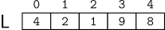

Ordenação de Índices
Imagine que temos uma lista contendo N números inteiros distintos. Esses números estão armazenados em um vetor L, conforme ilustrado abaixo:

Sua tarefa é construir um vetor I contendo N inteiros, onde cada elemento de I é um índice válido de L (ou seja, 0 ≤ I[i] < N), de forma que I seja uma permutação dos índices {0, 1,…,N − 1} e satisfaça a condição:
Em outras palavras, o vetor I deve indicar a ordem crescente dos elementos de L.
Por exemplo, para o vetor L = [4, 2, 1, 9, 8], o vetor I que representa a ordenação crescente é:
Nesse exemplo, os elementos de L ordenados são [1, 2, 4, 8, 9], correspondendo aos índices I = [2, 1, 0, 4, 3].